software I attempted not to break: photoshop, fusion360, coreldraw
hardware I attempted not to break: vinyl cutter, laser cutter
----bb8s----
First up - vinyl cutting. I spent a sad amount of time looking up laptop sticker designs, then settled on a few I thought would be cool to print. I found some examples of cool looking stickers, then recreated them in Photoshop and sized them to fit my laptop. My first attempt was making a print of Majora's Mask from the Legend of Zelda. I quickly realized this was stupid. The mask was so intricate and had so many tiny pieces to cut out, making it really hard for my first time working with the cutter. I also had gotten the sizing wrong, resulting in a sticker that didn't actually cover the apple on my laptop - whoops.
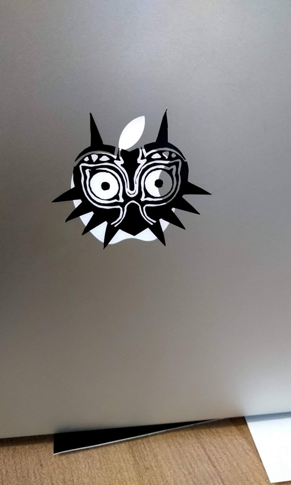
I'll try to print out another version of Majora's Mask later, but decided to move on to another idea I had - BB8. My first try was already more successful than the first iteration of Majora's Mask. BB8 is a lot simpler and easier to cut, so transferring it to my laptop worked very well.
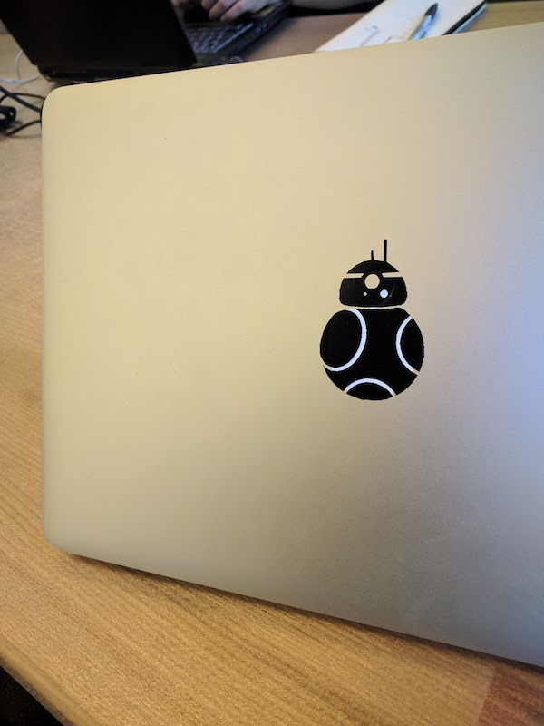
I'll come back to vinyl cutting - I have an awesome Totoro sticker I want to print up (and I need to make Majora's Mask not look super misshapen). But for now, BB8 has really stuck with me.
----bowling (& some accidental burning)----
After vinyl cutting came laser cutting. Again, I think I spent more time trying to come up with a cool idea than actually doing the cutting, but it was fun to see what insane projects people have done by sticking some cardboard in a laser cutter. After a few hours of research, I settled on something that I thought would be fun - CardBowl, or a smaller bowling set made out of cardboard. I started by sketching out some designs + measurements (there is a reason I use illustrator and photoshop. please ignore the terrible drawings)
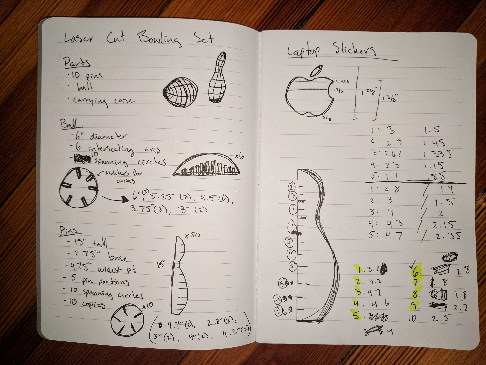
Then it was time to actually make these designs. I've been using Fusion360 because I have some familiarity with autoCAD from high school. After last week's designing and this week's, however, I quickly realized that I forgot literally everything, so it was fun relearning things. I first made all of the designs for the ball, and then worked on designing the bowling pins. Bowling pins are surprisingly hard to design so that they look like actual pins and not misshapen noses, so I ended up googling bowling pin dimensions and making the bowling pins according to actual bowling pin measurement specifications.
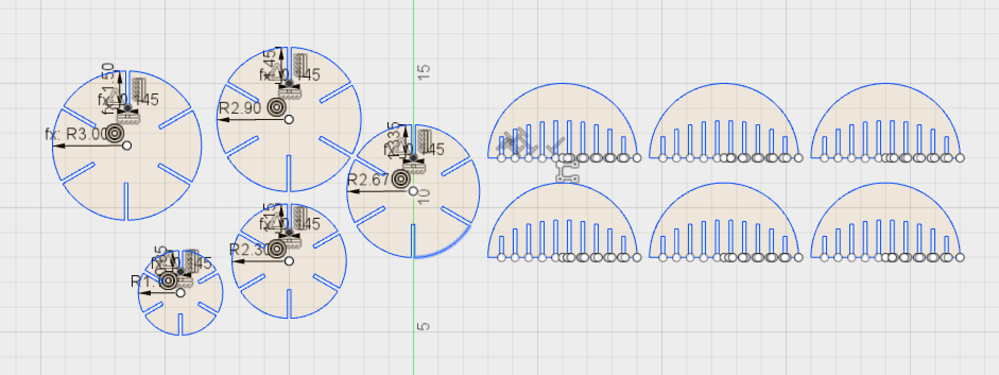
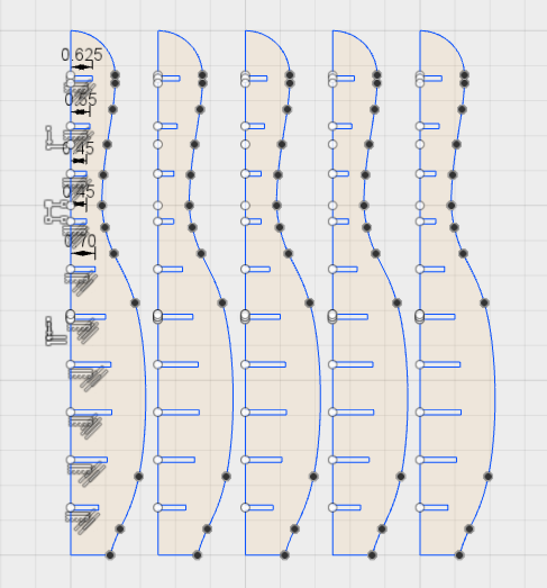
After designing, it was off to the laser cutter. This actually went surprisingly well. I didn't actually set anything on fire, just scorched my cardboard a bit the first round through. But after some power adjustments, everything was pretty much smooth cutting. Until I tried assembling things. Turns out that making everything super precise and clean so that the pieces would be flush after assembly is great when you're just putting a few pieces together. Trying to cram all of the parts on the ball, however, ended up being very hard. I want to go back in to lab and try to update the ball so it actually works and make the other 4 pins I didn't have a chance to make, so hopefully at some point I'll actually be able to play a fun game of CardBowl.
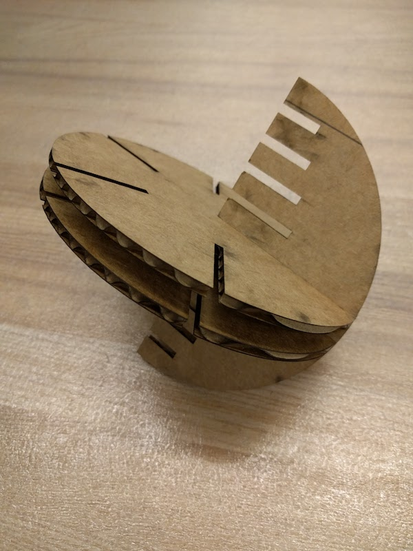
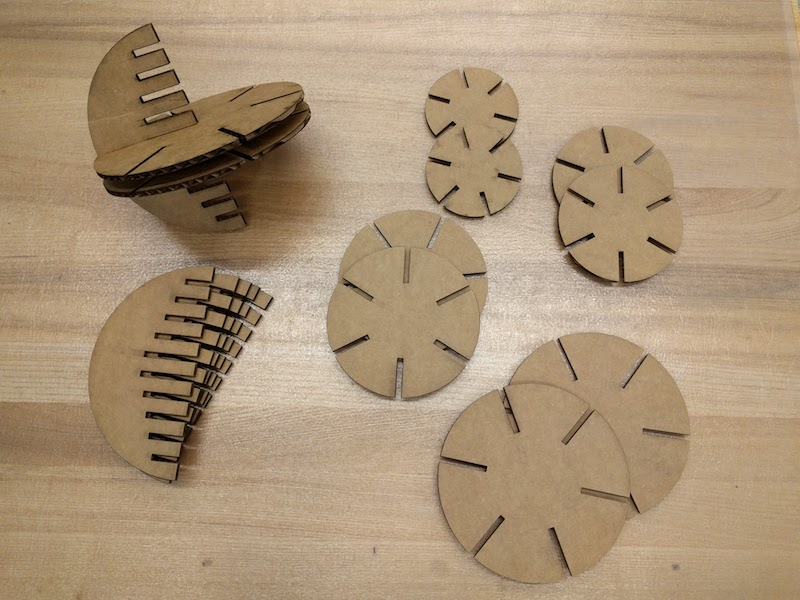
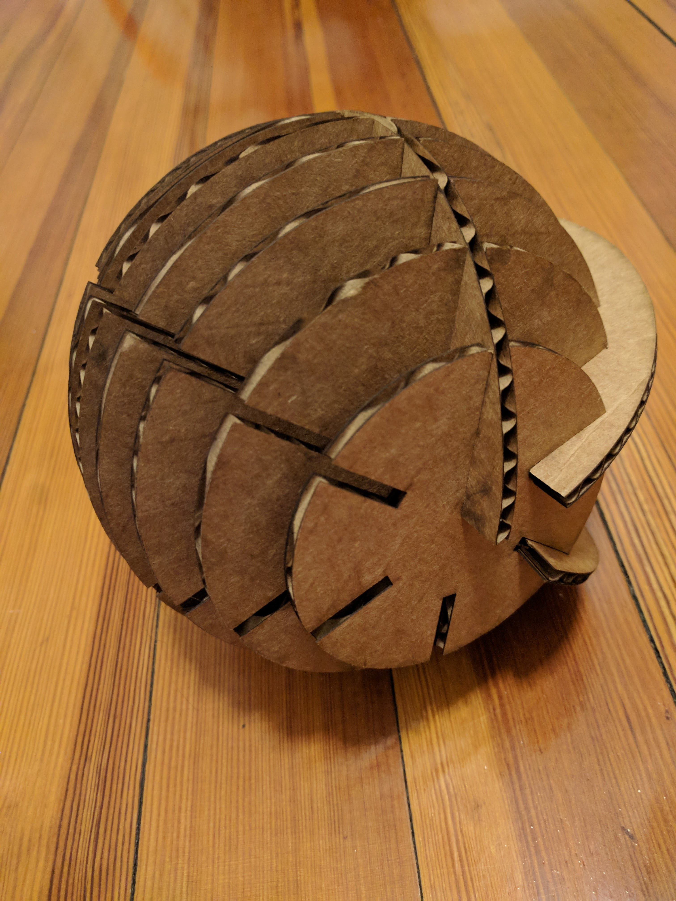
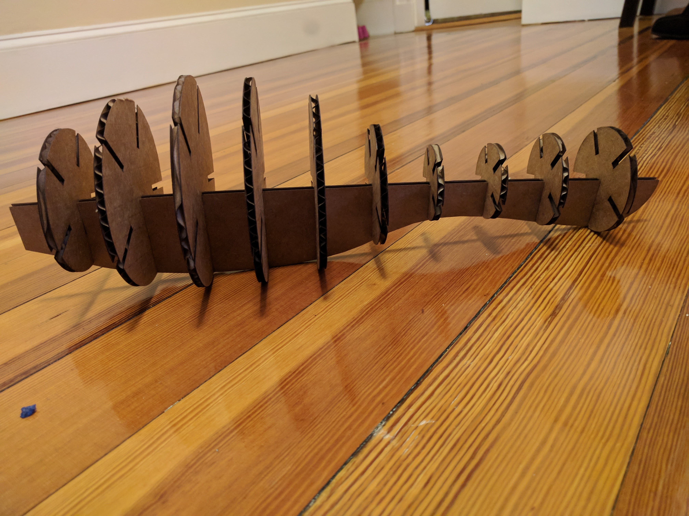
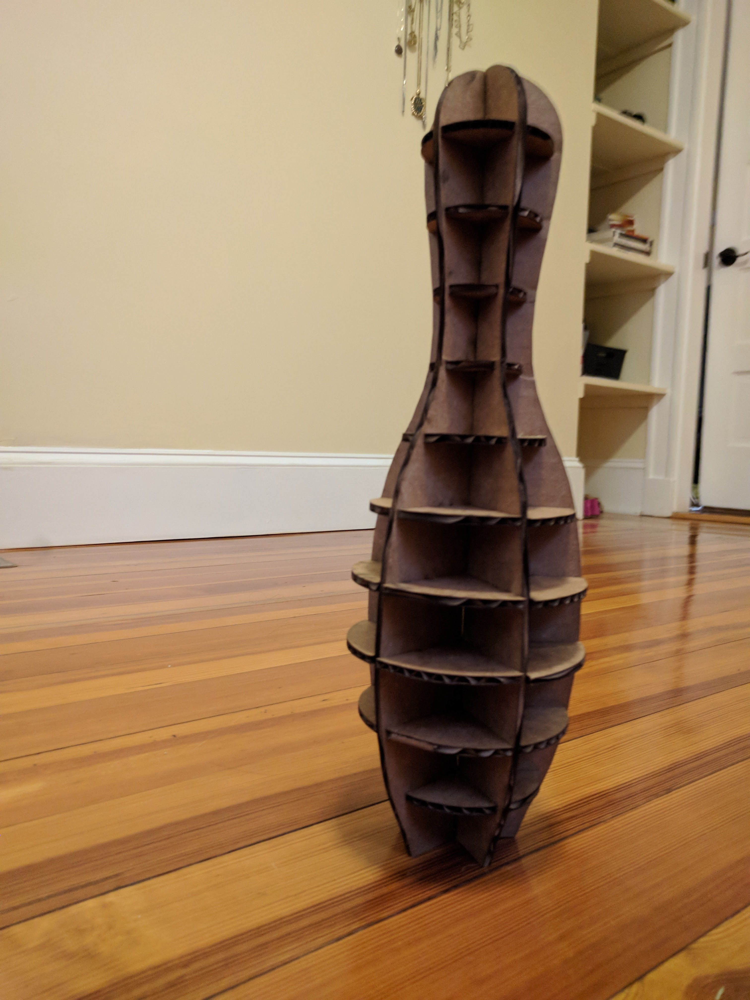
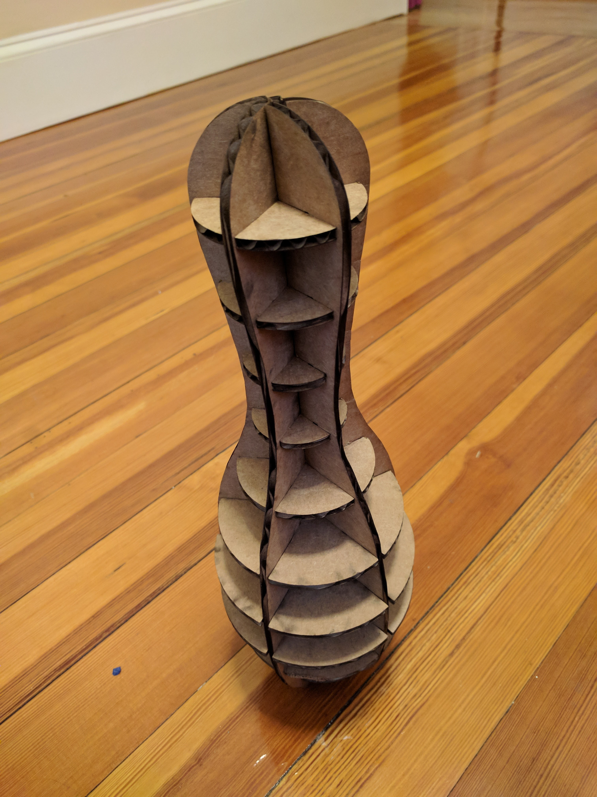